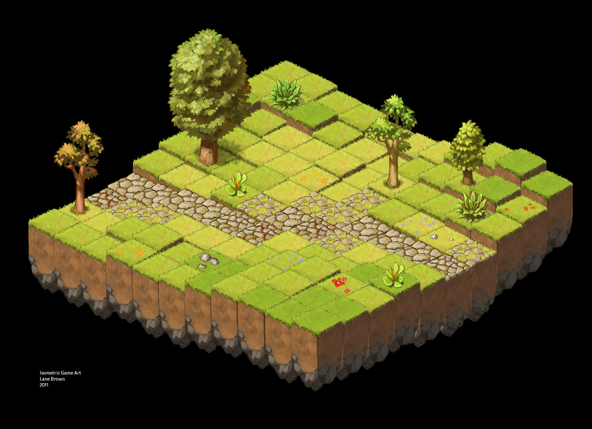
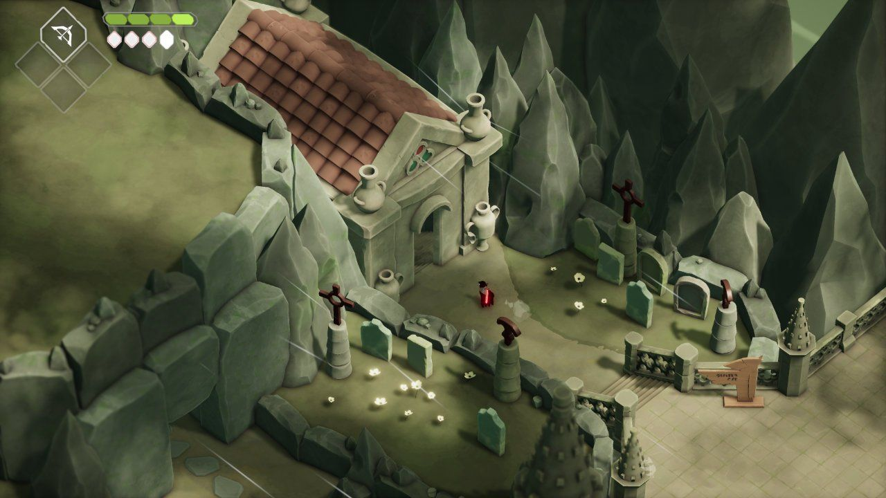

This page defines the direction of the art for the game Void Survivors.
This document is a WIP and will be completed in the Pre-Production phase of development. See Development Plan for more info.
Table of contents
🪘 Art Pillars 🪘
These pillars help drive decisions and direction in all aspects of the art for Void Survivors.
ğŸ—ï¸ Hyper Accessible
Void Survivors should support as many people as possible, on as many devices as possible, in as many situations as possible.
🔓 Accessible graphics that are clear and understandable at a glance.
🔓 Low hardware requirements (Older phones, laptops, …).
🔓 Consideration for individuals with visual impairments.
🔓 Low download requirements for low bandwidth tolerance.
🔓 Streamable assets for downloading on demand.
🔓 The graphics should be appropriate for players PG+.
🔥 Destruction
Void Survivors has a primary player motivation for destruction, ie explosions, flashy visual effects, objects being smashed apart, and general mayhem.
🆠All objects should be destructable and breakable, in a performant manner.
🆠Particle effects and other VFX should be highly leveraged.
📠Low Fidelity
The simulation of Void Survivors is lower fidelity than many action titles, specifically by using simpler physics🾠(collision and resolution) and artificial intelligence🧠than most action titles. This is to allow performant computation on low-end hardware and allows for large swarms of enemies and players in a single team.
The art style should reinforce this this. As detailed in the ‘Kingdoms and Castles’ postmortem, players expect higher fidelity simulation the higher fidelity the graphics are. Kingdoms and Castles chose a very low-fidelity art style to match their low-fidelity simulation, and received critical and commercial success.
Kingdoms and castles postmorem (GDC Vault)
🲠Fantastical
Void Survivors is set in an environment that is whimsical and light hearted. It avoids heavy themes, horror elements, and realism. Players should get a sense of wonder and delight in the environment and elements within Void Survivors. The combat will be highly stylized and not use gore, blood, or any other violent themes.
🧚 Effects should be comical and highly animated.
🧚 Themes should be vibrant.
🧚 Invaders should be based in fantasy and myth.
👉 Direction 👉
To reinforce the art pillars, these sections define more specific direction to be followed in the construction of the art for Void Survivors.
👉 Voxel based models
Voxel based models are highly compressible compared to typical triangle based meshes, allowing for a huge amount of content to be transmitted to clients with a small amount of bandwidth.
Voxel models are easily procedurally destructable compared to typical triangle based meshes. This is achieved simply by adding force to the cubes in the voxel mesh allowing for explosions and other effects - compared to a typical triangle based mesh destruction system that requires definition of fragments which has a production and asset size overhead.
Voxel based models are low fidelity, reinforcing the low fidelity nature of the simulation.
The following reference images demonstrate voxel based meshes in games.
Source: Stone Hearth
Source: Stone Hearth
Source: Minecraft 
Source: Minecraft
👉 Isometric View
Having an isometric view allows for higher device accessibility and control scheme, as well as performance optimizations.
The isometric view provides simplicity when panning and zooming a camera, allowing for a simple control scheme.
The isometric view is great at providing perspective of relative sizes of elements, and is used frequently outside of games for visualization purposes which makes it more accessible to players without much experience in games.
Having a fixed isometric view, opposed to a perspective camera, allows for optimizing the rendering pipeline which will make it more performant on lower end devices. Further, isometric views require less graphical computation, compared to that of a perspective based renderer due to orthographic projections being the default projection of renderers.
The following reference images demonstrate the isometric viewpoint.

Source: Team Porcupine 
Source: Wakfu
Source: Unity
👉 Flat World
Having a flat world, with no terrain altitude, allows for simpler controls and world generation.
A flat world is very simple to procedurally generate, compared to that of a world with different levels of terrain which requires mountains, rivers, and lakes. This reduces the production cost to develop the world.
A flat world makes Void Survivors far more accessible from a control scheme standpoint, requiring only panning and zooming to be able to interact effectively. In a non-flat world, rotating is required as objects may be obscured by terrain, eg an object hiding behind a mountain.
The following reference images demonstrate flat worlds.

Source: Kingdoms and castles
Source: Age of Empires 
Source: The Fertile Crescent
👉 Desaturated colors and highlighted elements
There will be a large number of players and invaders on screen at once and it’s important to remove cluttering from the screen.
To achieve this, damaging elements and elements that players should focus on (eg players that are dangerously close to being defeated when playing the healer class) should be highlighted and pop out of the background.
There are damaging elements in Void Survivors that should be clear to the player, so they can avoid damage and live as long as their skill allows them to, and provide them a high sense of locus of control.
The following reference images demonstrate desaturated colors of elements except for a few key elements that should draw the players attention.

Source: Deaths Door 
Source: Deaths Door 
Source: Tunic
Source: Hades 
Source: Enter the gungeon
Source: Hades
👉 Flat Colors with gradients
To minimize on the assets required to play Void Survivors, textural elements should be used sparingly. Instead,flat colors and gradients, which can be encoded in a very small amount of mathematical code, should be used.
Flat colors offer visual simplicity which reduces the noise that textural elements can create on small screens.
Flat colors make it easier to customize for visual impairments, and preferences can be provided to players (eg changing damaging elements from a red color to a player’s preferred color).
The following reference images demonstrate games that use flat colors with gradients and sparingly use textual elements.

Source: Deaths Door 
Source: Cube World 
Source: Cube World
Source: Stone Hearth 
Source: Tunic 
Source: Tunic
Source: Calder Moore - Artstation 
Source: Minecraft Dungeons 
Source: Minecraft Dungeons
Source: Unrailed 
Source: Calder Moore - Artstation
Source: Stone Hearth
👉 Soft lighting and shadows
Void Survivors is set in a fantasy environment that is whimsical and light hearted. To reinforce this, soft lighting and shadows should be used as opposed to realistic simulation of lighting and shadows.
The following reference images demonstrate soft lighting and shadows.

Source: Deaths Door
Source: Deaths Door 
Source: Hades
Source: Tunic Source: Tunic
👉 Stylized Textures
Void Survivors is set in a fantasy environment that is whimsical and light hearted. To reinforce this, stylized and handpainted textures should be used opposed to realistic textures.
The following reference images demonstrate stylized handpainted textures and elements.

Source: Andrii Tuzenko - Artstation 
Source: Andrii Tuzenko - Artstation  Source: Sephiroth Art - Artstation
Source: Sephiroth Art - Artstation
👉 Character limbs aren’t attached
Having characters limbs (hands, feet) not be attached to their torso allows for a far simpler key-frame animation system which is computationally less expensive, easier to produce assets for, and requires less bandwidth to transmit animated assets.
The following reference images demonstrate models without their limbs attached.

Color Pallette
To be completed by the Art Director in the Pre-Production phase. See Development Plan for more info.
Concept Art
To be completed by the Art Director in the Pre-Production phase. See Development Plan for more info.
Animation Samples
To be completed by the Art Director in the Pre-Production phase. See Development Plan for more info.
Character Designs
To be completed by the Art Director in the Pre-Production phase. See Development Plan for more info.
UI Mockups
To be completed by the Art Director in the Pre-Production phase. See Development Plan for more info.